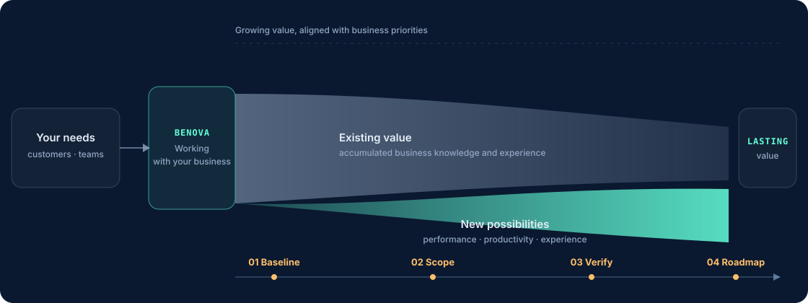

Accumulated business value
Business rules, data and operational knowledge need to keep serving the business throughout modernization.
NOVA is being completed for early release. Discuss a suitable assessment scope with Binean.
Discuss scopeNOVA · Business system modernization
NOVA aims to expand services and transition one capability at a time, with customizable gateways that let existing applications retain familiar integrations.
Start with a defined scope. Verify business results, performance and operations before expanding.
Build on accumulated business knowledge and investment.
Tailor ingress gateways to the applications already in use.
Choose each scope and make decisions using verified results.
Your business needs
Backend modernization involves applications, data and operational practices. Start by identifying what needs to change and which connections need to remain.
Business rules, data and operational knowledge need to keep serving the business throughout modernization.
A backend change can require updates to frontends and integrated systems. Its impact needs to be understood.
Processing time, capacity under load and operational effort need measurement against the workloads that matter.
Each change needs a defined scope, accountable owners and acceptance criteria so teams can plan delivery and assess results.
NOVA is being developed for this approach: preserve the value that matters, introduce new capabilities and verify each step.
Intended value
NOVA is evaluated through its ability to preserve connections, build on business capabilities and improve how systems serve the organization.
Addresses: Accumulated business value
Start by using existing backend capabilities and select each modernization scope according to business priorities.
Addresses: Connected applications
Orbit tailors ingress gateways to existing clients. Compatibility testing establishes which integrations can remain unchanged.
Addresses: Performance priorities
Measure processing time, capacity under load and resource use against the same workload to establish actual improvement.
Addresses: Controlled transitions
Divide the modernization path into verifiable scopes, with clear acceptance outcomes and operational requirements.
Benefits are evaluated for each scope. Costs, security, licensing and operational requirements are agreed before deployment.
The NOVA platform
Orbit adapts to how applications connect. Aster connects compatible backends. Vista provides the workspace. Nexus, the build and operations toolkit, joins in a later phase.
Application connectivity · business orchestration
Multiple ingress gateways can be tailored to existing application calls and data, with shared business orchestration. The aim is to preserve integrations and limit changes to connected systems.
A workspace for users
Menus, tabs, forms and tables in one focused experience. The application shell is usable; sign-in and Orbit integration are being completed.
Connect the business backend
Connects Orbit to compatible backends, mapping data and managing processing sessions through connection profiles. Each backend and business scope needs integration verification.
Build and operations toolkit
Prepare builds, environments and test data for backend changes. The underlying tools have been used in live environments; the integrated NOVA experience belongs to a later phase.
Multi-agent orchestration
Additional orchestration for flows that need multiple agents or per-step control. Echelon is a peer component and participates when a flow needs it.
AI assistance for work
Planned assistance for reading documents, summarizing and preparing content so people can focus on assessment and decisions. Not a shipping feature.
How to get started
Agree on what needs to be demonstrated, how to measure it and the conditions for delivery. Assessment results provide a basis for choosing the next investment scope.
Choose the capability, backend and connected applications, then identify the priority problem.
Agree on compatibility requirements, test data, measurement methods and acceptance criteria.
Compare business results, performance and operational effort with the current baseline for the same scope.
Identify what can proceed or needs further verification, with requirements and an indicative investment scope.

Share your existing backend, the applications that need to stay connected and your goals. Binean will help define an appropriate assessment scope.
Three areas to clarify when defining scope
The backend, applications and connections to preserve.
Business results, performance and operations.
Delivery requirements and an indicative investment scope.
Start the conversation by email. Scope, readiness and assessment conditions will be confirmed before work begins.